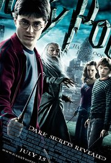

Franco MUOIO
Apprenti Programmeur
Biographie
Ayant effectué mes études dans l'immobilier, j'ai durant celle-ci eu la volonté de créer une start-up dans ce domaine avec un ami (foxfinder.fr). Ayant besoin de plus de compétences techniques pour le bon déroulement de notre projet j'ai décidé d'intégrer le wagon afin de continuer à développer notre solution qui avait déjà était créée par un alumni du Wagon.
|  |
Harry PotterHarry Potter est une série littéraire de fantasy écrite par l'auteure britannique J. K. Rowling, dont la suite romanesque s'est achevée en 2007. |
 |
La soupe au chouxLa Soupe aux choux est un film français réalisé par Jean Girault, sorti en 1981. Comédie mêlée de science-fiction, adaptation du roman du même nom de René Fallet paru en 1980 |
A propos de cette pâge
Cette pâge a était dévellopée par un futur très grand devellopeur répondant au nom de Franco MUOIO